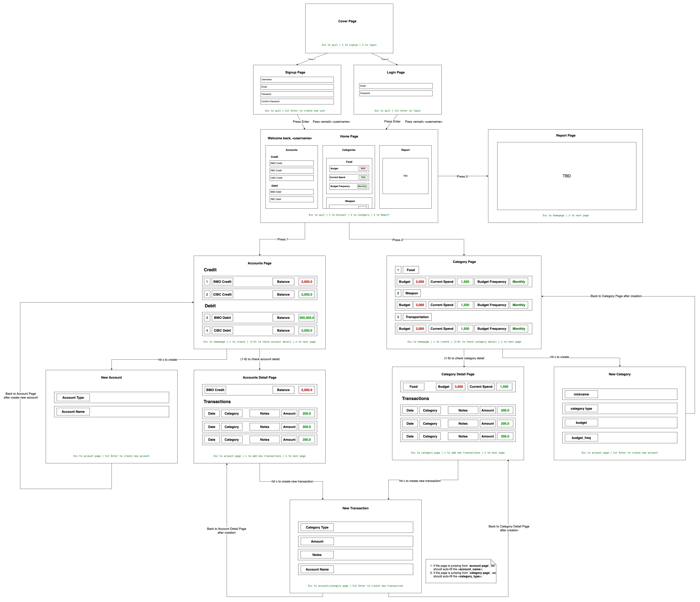

______ __ __ __ ______ ______ ______ ______ __ __
/\ ___\/\ \/\ "-.\ \/\__ _\/\ == \/\ __ \/\ ___\/\ \/ /
\ \ __\\ \ \ \ \-. \/_/\ \/\ \ __<\ \ __ \ \ \___\ \ _"-.
\ \_\ \ \_\ \_\\"\_\ \ \_\ \ \_\ \_\ \_\ \_\ \_____\ \_\ \_\
\/_/ \/_/\/_/ \/_/ \/_/ \/_/ /_/\/_/\/_/\/_____/\/_/\/_/
📘 TUI Frontend Documentation¶
🗂️ Project Structure¶
Here is the tree view of the TUI frontend project. This structure is designed to keep files organized and make it easy to add new pages, components, and utilities.
TUI/
├── Cargo.toml # Rust package manifest file
├── src/
│ ├── main.rs # Entry point for the application
│ ├── ui/
│ │ ├── components.rs # Reusable input field components
│ │ ├── cover.rs # Cover page (first page of the TUI)
│ │ ├── login.rs # Login page
│ │ ├── signup.rs # Signup page
│ │ └── mod.rs # Exposes all UI pages for easy imports
│ └── utils/ # Utility functions, helpers, or extensions (optional)
│
├── assets/ # Place for ASCII art or static text files (optional)
├── README.md # Instructions for the project
└── .gitignore # Ignore build files, node_modules, etc.
🗂️ Work Distribution¶
| Page | Assign to | Done or Not |
|---|---|---|
| Cover | Damian | ✅ |
| Signup | Damian | |
| Login | Damian | |
| Home | Damian | |
| Account | ||
| Account Detail | ||
| Create Account | ||
| Category | ||
| Category Detail | ||
| Create Category | ||
| Create Transaction | ||
| Report | Damian |
🎨 Page Design¶

📚 Explanation of Key Files¶
| File/Folder | Purpose |
|---|---|
main.rs |
Entry point of the TUI app, sets up the terminal, and handles page routing. |
ui/cover.rs |
First page displayed when the app runs. Shows the logo and page options (Signup, Login, Quit). |
ui/signup.rs |
Handles the signup page where users enter their username, email, password, and confirm password. |
ui/login.rs |
Handles the login page where users enter email and password to log in. |
ui/components.rs |
Defines reusable components like InputField for forms (input fields) used on Signup and Login pages. |
ui/mod.rs |
Exports all UI pages (cover, login, signup) so they can be easily imported from mod.rs. |
utils/ |
Utility functions (not required for now but useful if logic grows). |
assets/ |
Store static files like ASCII logos or help text (optional, can be used for large logos). |
🌐 Page Workflow¶
Here’s how the flow of pages works in this project.
[ Cover Page (start) ]
↓
[ 1. Signup Page ] <--- Select using keyboard
↓
[ 2. Login Page ] <--- Select using keyboard
-
Cover Page: The first page displayed when you launch the app.
- You can select 1 to go to the Signup Page.
- You can select 2 to go to the Login Page.
- Press Esc to quit.
-
Signup Page:
- User fills in Username, Email, Password, and Confirm Password.
- Press Tab to navigate between input fields.
- Press Enter to submit the form.
- If passwords don't match, an error message appears.
-
Login Page:
- User fills in Email and Password.
- Press Tab to navigate between input fields.
- Press Enter to submit the form.
- If email/password is incorrect, an error message appears.
🔧 How to Add a New Page¶
To add a new page, follow this step-by-step workflow. Let’s assume you want to add a Settings Page.
-
Create the Page File:
- Go to
src/ui/. - Create a new file named
settings.rs.
- Go to
-
Add Your Page Logic:
use ratatui::{
layout::{Constraint, Direction, Layout},
widgets::{Block, Borders, Paragraph},
style::{Color, Style},
Frame,
};
pub struct SettingsPage;
impl SettingsPage {
pub fn new() -> Self {
Self
}
pub fn render(&self, f: &mut Frame) {
let chunks = Layout::default()
.direction(Direction::Vertical)
.margin(2)
.constraints([Constraint::Percentage(100)].as_ref())
.split(f.area());
let title = Paragraph::new("Settings Page")
.style(Style::default().fg(Color::Yellow))
.block(Block::default().borders(Borders::ALL));
f.render_widget(title, chunks[0]);
}
}
- Expose the Page in
mod.rs:- Go to
src/ui/mod.rs. - Add the following line:
- Go to
pub mod settings;
- Add the Page Route in
main.rs:- Open
src/main.rs. - Import the new page:
- Open
use crate::ui::settings::SettingsPage;
- Add a key (like `3`) to **open the Settings Page** from the cover page:
match key {
KeyCode::Char('1') => current_page = Page::Signup,
KeyCode::Char('2') => current_page = Page::Login,
KeyCode::Char('3') => current_page = Page::Settings, // New Route for Settings Page
KeyCode::Esc => break,
_ => {}
}
📦 Example mod.rs File (for src/ui/mod.rs)¶
This file exposes all UI pages.
pub mod components;
pub mod cover;
pub mod signup;
pub mod login;
pub mod settings; // Newly added settings page
🚀 How to Run the App¶
- Clone the Repo:
git clone https://github.com/username/tui-frontend.git
cd tui-frontend
- Run the App:
cargo run
- Navigate:
- 1 to go to the Signup Page.
- 2 to go to the Login Page.
- Esc to quit.
📜 Page Descriptions¶
| Page | Description |
|---|---|
| Cover Page | Main menu, shows logo and options for Signup and Login. |
| Signup Page | User fills in username, email, password and confirms it. |
| Login Page | User enters email and password to log in. |
| Settings Page | (Optional) Add options like theme selection. |
🎉 Contribution Workflow¶
- Fork the repo on GitHub.
- Create a branch for your new feature.
git checkout -b feature/new-page
- Add a new page in
src/ui/following the workflow above. - Run tests before submitting:
cargo check
cargo test
- Push your branch:
git push origin feature/new-page
- Create a pull request (PR) on GitHub.
💡 Useful Commands¶
| Command | Description |
|---|---|
cargo run |
Run the TUI application. |
cargo check |
Check for compile-time errors. |
cargo test |
Run unit tests (if any). |